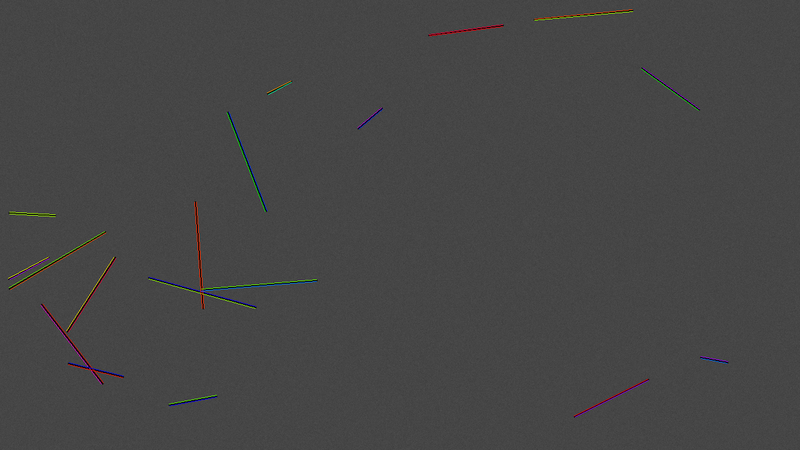
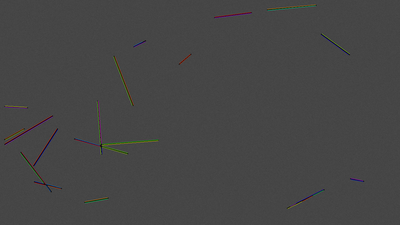
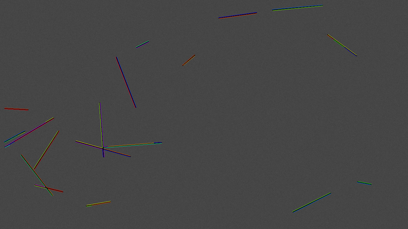
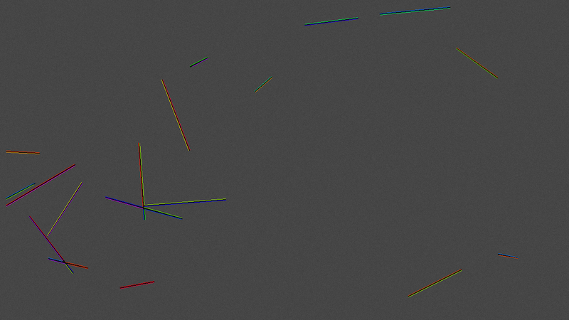
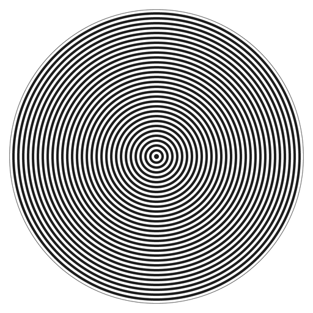
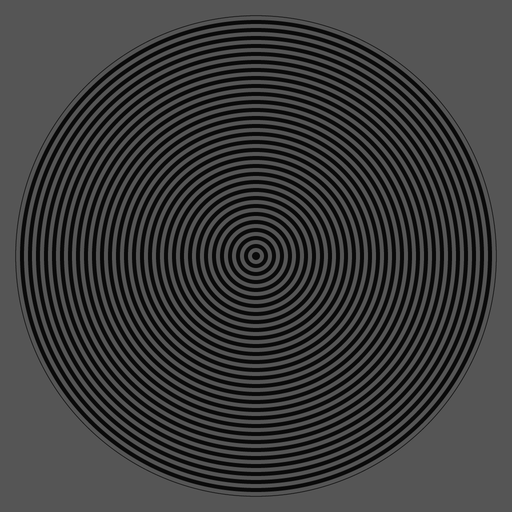
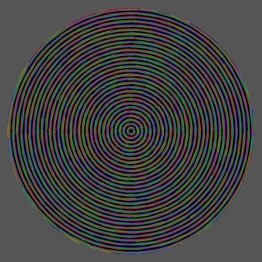
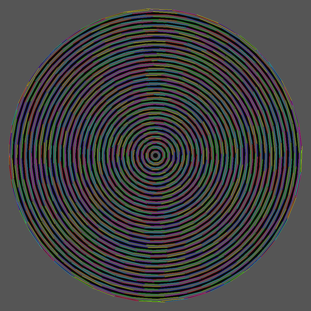
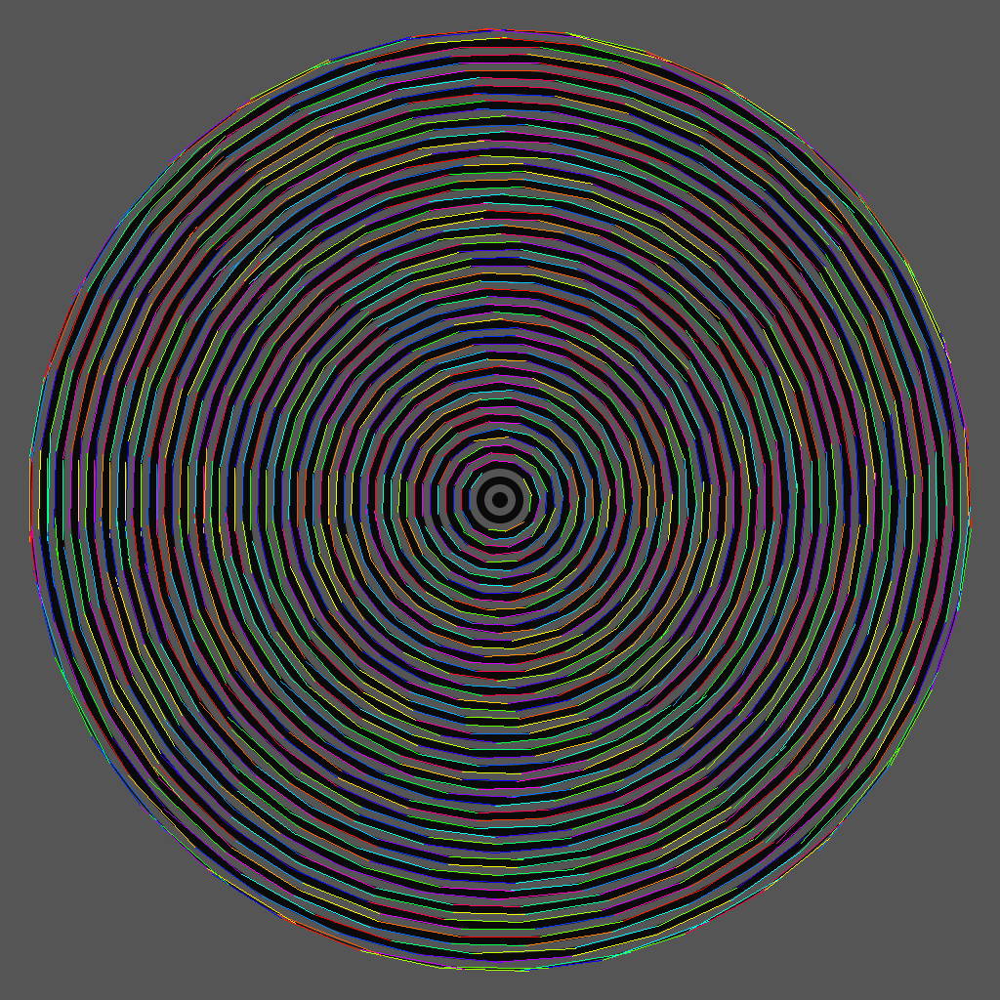

Synthetic ground truth with strict one-to-one matching, geometric accuracy, and orientation isotropy — against genuine LSD, ED_Lib EDLines, and ELSED.
Synthetic scenes (1280×720, 18 random segments, 4 images per condition) with exact
ground truth, Gaussian noise σ ∈ {0, 5, 10, 20}. Matching is strict one-to-one
(each GT segment matches at most one detection; a detection fragmented into several pieces
is penalised) — lenient one-to-many matching flattered every method and inverted rankings,
so it is not used. Every detector's main knob is swept and the best F-score
(F-max) reported, so no method is judged at an unfavourable operating point.
Baselines are the genuine author implementations (canonical LSD; ED_Lib EDLines;
ELSED built from the authors' source) — an earlier self-reimplemented "EDLines-style"
baseline underestimated the real thing badly and was retired to a clearly-labelled
fallback. One sweep asymmetry to disclose: ELSED's implementation aborts below
minLineLen ≈7–10, so its knob sweep spans 10–40 where the others reach down
to 5; its F-max points did not lie at the clipped end.
| noise σ | SweepLSD | LSD | EDLines (ED_Lib) | ELSED |
|---|---|---|---|---|
| 0 (clean) | 0.966 | 0.923 | 0.953 | 0.979 |
| 5 | 0.963 | 0.926 | 0.954 | 0.986 |
| 10 | 0.949 | 0.800 | 0.954 | 0.986 |
| 20 | 0.907 | 0.507 | 0.961 | 0.986 |
Stated plainly: ELSED leads F-max at every noise level on this protocol — its
fused drawing-and-fitting with validation is extremely effective on synthetic bar scenes,
and essentially flat in noise. SweepLSD is second on clean and low-noise images; ED_Lib is
similarly noise-stable at a slightly lower level; LSD degrades fastest under heavy noise.
A false-positive taxonomy shows the gap to ELSED is driven almost entirely by
fragmentation — under strict one-to-one matching every extra fragment of a
ground-truth line counts as a false positive, and ELSED's drawing pass jumps
discontinuities natively. SweepLSD's optional gap-tolerant collinear linker
(link_collinear, off by default; a finalization-level feature that preserves
the streaming property) re-assembles fragments across junction cuts and noise breaks and
closes part of that gap: with it, F-max rises to 0.973 on clean scenes and
0.935 at σ20.




| detector | lateral error | direction error |
|---|---|---|
| SweepLSD | 0.12 px | 0.01–0.04° |
| ELSED | 0.12–0.14 px | 0.07–0.11° |
| EDLines (ED_Lib) | 0.13 px | 0.14° |
| LSD | 0.15 px | 0.03–0.13° |
Per-segment geometry is SweepLSD's strongest axis: the scatter-moment line fit over every member pixel plus sub-pixel NMS plus the half-pixel lattice correction give it the best direction accuracy of the field — 2–5× better than ELSED and an order of magnitude better than ED_Lib. (Two frame conventions were fixed during this work: the detector's own −0.5 px lattice bias, and a +0.5 px sampling mismatch in the evaluator's GT renderer that had been taxing every detector.)
Synthetic probes (1024×1024): a 72-sector Siemens star, a zone plate, concentric circles, and a 48-line angular fan. CoV = coefficient of variation of the length-weighted orientation histogram (lower = more isotropic).
| pattern | SweepLSD | LSD | EDLines (ED_Lib) | ELSED | ||||
|---|---|---|---|---|---|---|---|---|
| segs | CoV | segs | CoV | segs | CoV | segs | CoV | |
| Siemens star (straight spokes) | 110 | 0.74 | 108 | 0.51 | 108 | 0.59 | 108 | 0.50 |
| Angular fan (straight lines) | 198 | 0.21 | 302 | 0.18 | 193 | 0.20 | 192 | 0.22 |
| Concentric circles (no straight lines!) | 0 | — | 1796 | 0.13 | 1768 | 0.17 | 1443 | 0.29 |
| Zone plate (curved everywhere) | 27 | 1.58 | 859 | 0.18 | 675 | 0.24 | 475 | 0.31 |
Read the straight-line rows first, because SweepLSD does not win them. On the two probes that actually contain straight lines, its orientation histogram is the least uniform of the four: CoV 0.74 on the Siemens star against 0.50–0.59, and 0.21 on the angular fan against 0.18–0.22. The cause is structural and known — the gradient direction is quantised to just horizontal or vertical, so orientations near the diagonals are served by a coarser test than orientations near the axes. That is a real cost of the two-way quantisation the streaming design buys its speed with, and it is the reason the fan row is a tie rather than a lead. The zone-plate CoV of 1.58 should not be read as a fifth data point: with only 27 surviving segments the statistic is dominated by small-sample structure, and those survivors are described below.





| axis | leader |
|---|---|
| F-max (every noise level, strict 1-to-1) | ELSED |
| per-segment geometric accuracy (esp. direction) | SweepLSD |
| low-contrast / soft-edge coverage | LSD, EDLines (orientation-coherence linking) |
| orientation isotropy on straight-line probes | ELSED, LSD (SweepLSD's two-way direction quantisation costs it here) |
| curve rejection (only straight lines) | SweepLSD |
| speed, memory, latency | SweepLSD (one-pass) |
| indoor vanishing points (fair protocol) | SweepLSD (details) |
sweeplsd_evaluate generates the synthetic
scenes and the table deterministically; sweeplsd_gen_isotropy produces the probe
images and rose diagrams. Both build with -DSWEEPLSD_BUILD_BENCH=ON (fetches
LSD at configure time). Genuine-EDLines rows are produced by
sweeplsd_edlines_runner (OpenCV) and ingested with --edreal-dir;
ELSED rows by the authors' source built separately (Apache-2.0), ingested with
--elsed-dir.